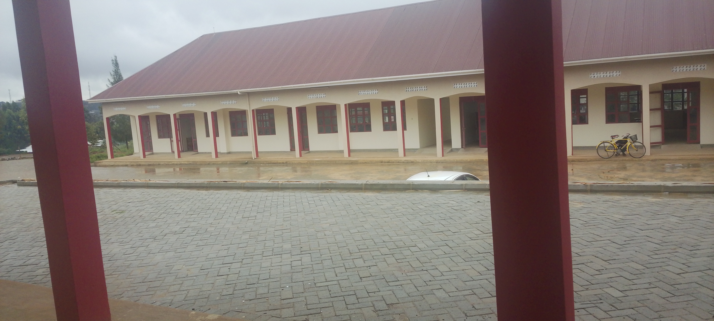

P.O BOX 150.Macuro ward,Nyarubungo II,Mbarara city south division
"We Labour for Future"
We are delighted to welcome you to St. Charles Kitagata SS! Our school is dedicated to providing a supportive and inspiring environment where students can grow academically, socially, and morally. Explore our website to learn more about our programs, achievements, and community.

St. Charles Kitagata SS is a reputable secondary school committed to providing quality education, nurturing talents, and promoting discipline and moral values. We aim to equip students with knowledge, skills, and character to succeed in life.